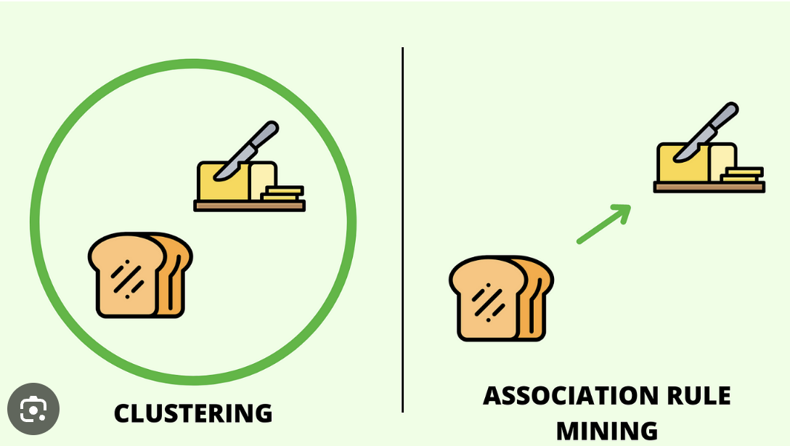
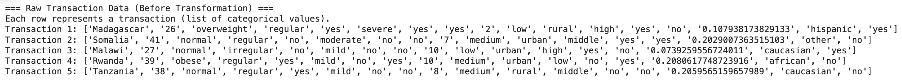
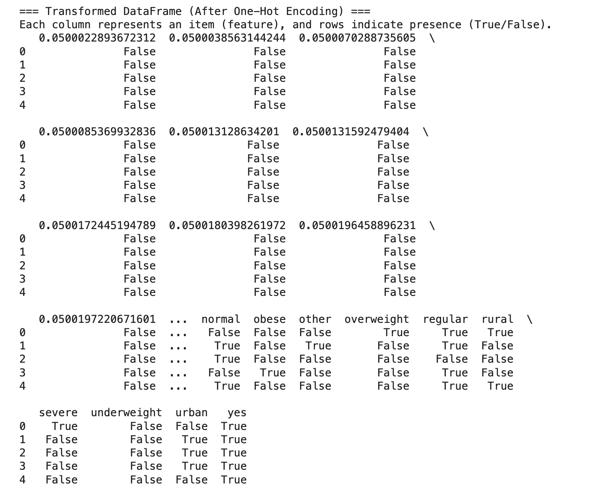
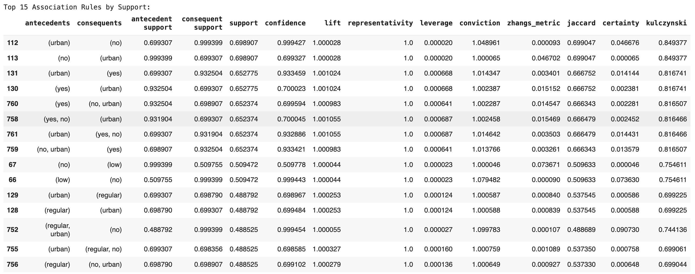
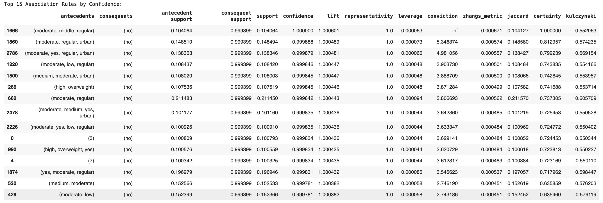
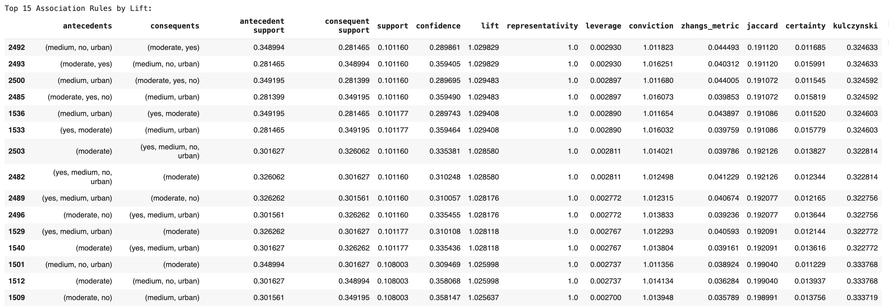

What is Association Rule Mining (ARM)?
Association Rule Mining (ARM) is a data mining technique that identifies relationships between different variables in large datasets.
It is widely used in market basket analysis to find associations between purchased items but also plays a crucial role in medical research,
helping uncover hidden connections between symptoms, risk factors, and treatments.
How ARM Works
ARM works by scanning a dataset to find patterns where the occurrence of one event (or item) is strongly linked to another.
These associations are presented in the form of rules, such as:
If a patient has irregular periods and high androgen levels, then the likelihood of insulin resistance increases.
Key Metrics in Association Rule Mining
Association rules are evaluated based on the following metrics:
- Support: Measures how often a rule appears in the dataset. A high support value means the rule is relevant for many patients.
- Confidence: Measures the probability that one condition leads to another. Higher confidence indicates stronger relationships.
- Lift: Measures the strength of an association compared to random chance. A lift value greater than 1 suggests a meaningful relationship.
Illustration of ARM Concepts
Below is a visualization of how ARM works in medical datasets:

The Apriori Algorithm
The Apriori algorithm is one of the most widely used techniques in ARM. It identifies frequent itemsets and generates association rules by following an iterative process.
The algorithm follows two steps:
- Frequent Itemset Generation: Identifies the most commonly occurring conditions, symptoms, or treatments.
- Rule Generation: Uses frequent itemsets to generate association rules based on support, confidence, and lift thresholds.
How ARM is Used in PCOS Data Analysis
In this project, ARM helps uncover meaningful patterns in PCOS data by analyzing patient records, symptoms, and medical history.
Some key insights extracted using ARM include:
- Common symptom groupings, such as irregular periods + acne + weight gain being strongly linked to insulin resistance.
- Frequent lifestyle habits associated with PCOS severity, like high sugar consumption increasing the risk of high androgen levels.
- Most effective treatment combinations, such as metformin + dietary changes being linked to improved hormonal balance.
The findings from ARM help in developing personalized treatment plans for PCOS patients based on their symptom patterns and risk factors.
Access Full Code on GitHub
The complete ARM analysis, including data preprocessing and model implementation, is available on GitHub.
View on GitHub
Data Preparation for ARM
ARM requires categorical or binary-encoded transactional data. The dataset was transformed into a transaction format suitable for Apriori.
Dataset Before Transformation

Original dataset containing categorical medical history and lifestyle attributes.
Dataset After Transformation

Data converted into binary-encoded transaction format, where 1 indicates the presence of an item in a transaction.
Key Transformations:
- Categorical data converted into binary (0/1) representation.
- Transaction data structure used for rule mining.
- Redundant features removed to enhance association rule mining performance.
ARM Results & Top Association Rules
The Apriori algorithm was applied to the PCOS dataset to identify significant associations between symptoms, lifestyle factors, and treatments.
The results highlight the most frequent and impactful rules, ranked based on support, confidence, and lift.
Top 15 Rules by Support
Support measures how often an association occurs in the dataset. A higher support value indicates that a particular rule is relevant to a large portion of the data.
The image below displays the top 15 rules based on support, showing the most common symptom and treatment patterns observed in PCOS patients.

Top 15 Rules by Confidence
Confidence represents the likelihood that the presence of one condition leads to another.
Higher confidence values suggest stronger relationships between features. The graph below highlights the top 15 association rules
with the highest confidence, revealing how certain symptoms are linked to specific PCOS diagnoses or lifestyle factors.

Top 15 Rules by Lift
Lift measures the strength of an association compared to random chance. A lift value greater than 1 suggests that the two conditions
occur together more frequently than expected. The chart below illustrates the top 15 rules based on lift, helping to uncover strong
medical and lifestyle correlations in PCOS patients.

Key Observations
-
PCOS-related symptoms such as irregular periods, weight gain, and high androgen levels frequently appear together, indicating
strong internal associations between hormonal imbalances and physical symptoms.
-
Certain lifestyle factors, such as high sugar consumption and lack of exercise, increase the likelihood of developing specific
PCOS symptoms, suggesting that lifestyle modifications could play a role in managing the condition.
-
Common medication combinations were identified, providing insights into frequently used treatment approaches for different
PCOS subgroups. This information can help healthcare professionals tailor treatments based on patient history.
-
Some unexpected associations were discovered, such as the connection between stress levels and hormonal imbalances, indicating
that stress management might be a factor worth exploring in PCOS treatment strategies.
These insights from association rule mining can be used to develop personalized treatment recommendations and preventive strategies
for PCOS management.
Conclusion
Association Rule Mining (ARM) helps uncover hidden relationships in PCOS-related data. The insights gained from support, confidence, and lift values can assist medical professionals in:
- Developing personalized PCOS treatment plans.
- Understanding how lifestyle factors contribute to symptom severity.
- Identifying common symptom clusters that can improve diagnosis.
ARM is a powerful tool in medical research, offering data-driven insights to enhance decision-making and improve patient care.